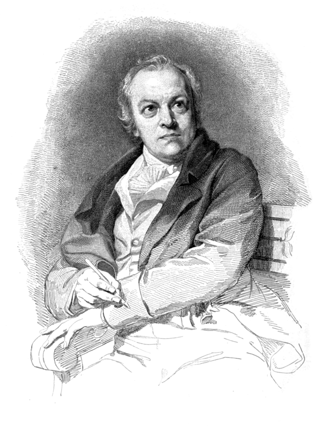

Ульям Блейк
Не много об авторе:
Уильям Блейк - William Blake — английский поэт, художник и гравёр.
12 августа 1827, Лондон
Почти непризнанный при жизни, Блейк в настоящее время считается важной фигурой в истории поэзии и
изобразительного искусства романтической эпохи.
Всю жизнь прожил в Лондоне (за исключением трёх лет в Фелфаме)
Avatar: Ульям Блейк

Один из самых популярных стихов этого поэта:
Древо яда
- Друг меня разгневал раз;
- Но я вспылил, и гнев угас.
- На врага я гнев таил;
- И гнев лишь набирался сил.
- Я слезами гнев питал,
- Ложной дружбой согревал.
- Не жалел ни лжи, ни слез;
- С каждым часом гнев мой рос.
- Наливаясь день за днем,
- Зрело яблоко на нем.
- И дразнило взор, красно;
- Знал мой враг, мое оно
.
- И однажды влез за ним
- В сад под пологом ночным.
- Утром – я того и ждал! –
- Труп под деревом лежал.
Перейти на источник стихотворения>
*Перейти на Автора Страницы*